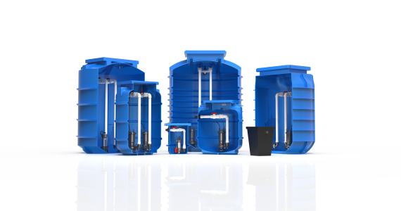
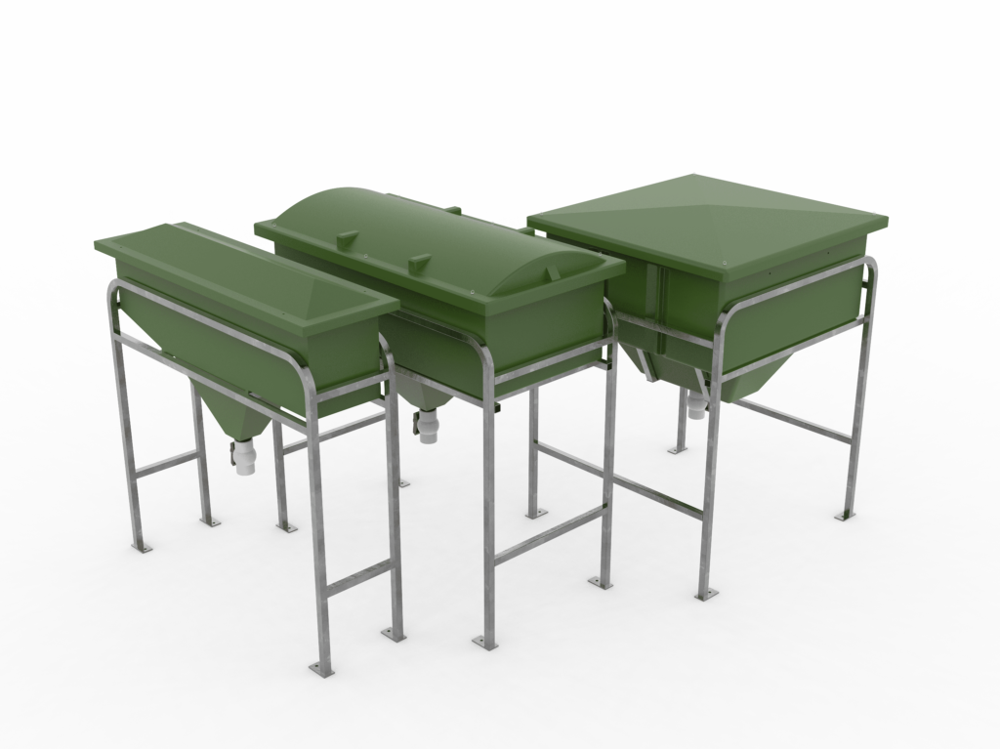
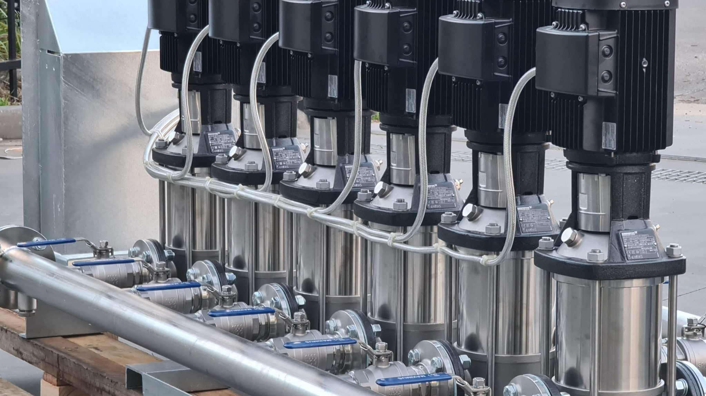
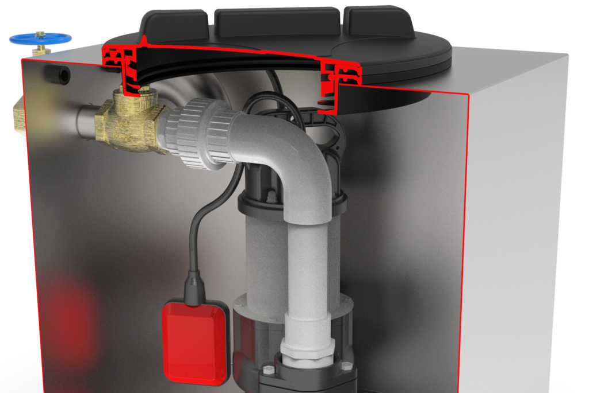

Pumping & Trade waste equipment for Trade Stores


Compact, high-demand products designed for plumbers and resellers – ready to stock, resell, and deliver.
Request a Quote MAKE AN ENQUIRYWhy Choose Aline Pumps
Competitive Pricing
Volume discounts available for regular orders and established trade partners.
Fast Dispatch
Short lead times with reliable deliveries across NSW & QLD. Most orders dispatched within 2-3 business days.After-Sales Support
Commissioning, warranty, and responsive service. Technical support for your customers and installation guidance.Featured Product Ranges
High-demand products perfect for trade store inventory
Pre-Packaged Pump Stations
Complete pump station solutions ready for immediate resale. Includes all necessary components and documentation.
View Range
Submersible Pumps
High-quality submersible pumps for various applications. Compact packaging ideal for shelf display.
View Range
Grease Arrestors
Commercial-grade grease arrestors for restaurant and food service applications. Easy installation and maintenance. View Range
Oil Separators
Oil-water separators for industrial and commercial applications. Compliant with environmental regulations. View Range
Pressure Systems
Our commercial pressure systems ensure consistent water pressure and optimal performance for demanding industrial, residential, and large-scale commercial applications.
View Range